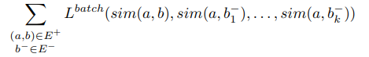

StarSpace - Embed All The Things! (Wu et al. 2017)
Overview
Provides a general method for embedding entities composed of discrete features
Key Results
Denote all features of entities as n dimensional matrix
Each entity vector is expressed as summation of all its feature vectors
Each feature can be regarded as each entity (in case of embedding words)

Train the feature vectors by minimizing loss on the objective function that compares positive sample to negative samples
Comments
Provides very strong baseline for any embedding methods but seems to take more time to train compared to other embedding methods that are made for specific purposes